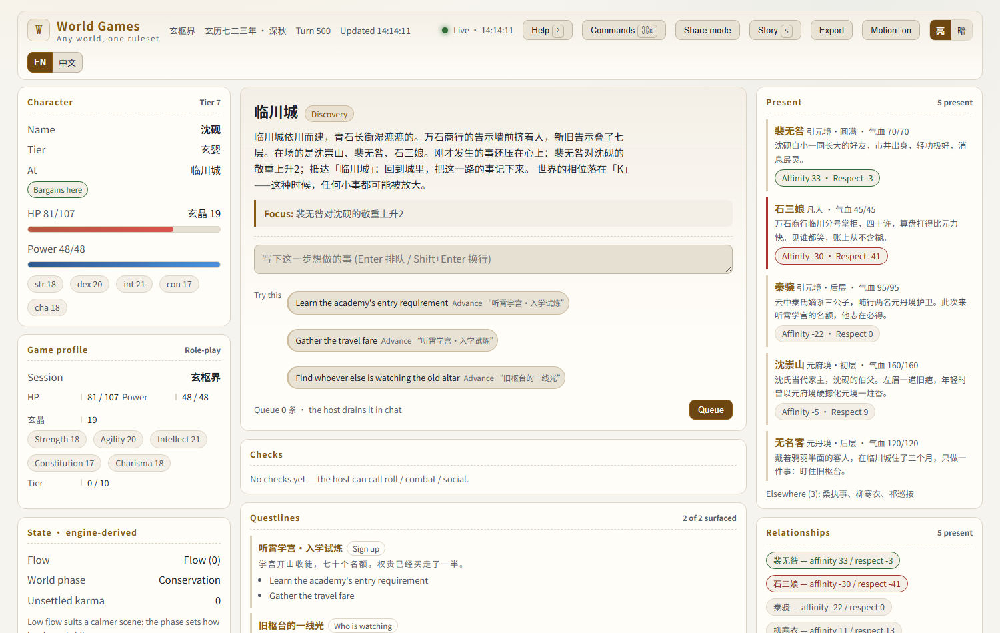
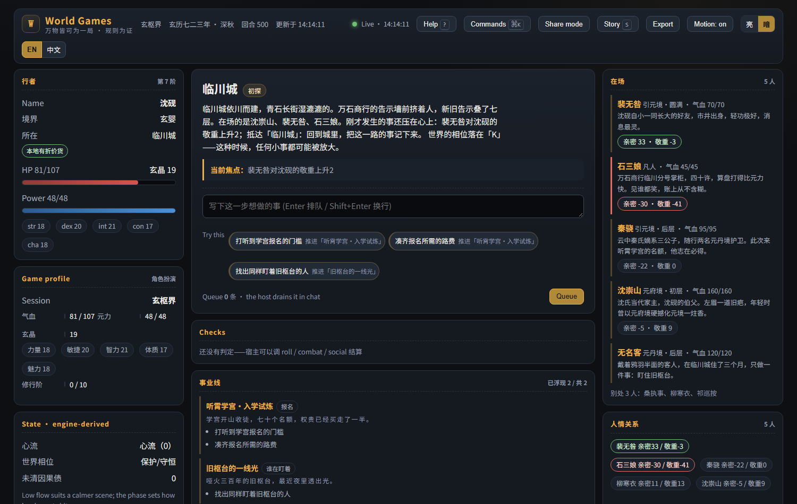
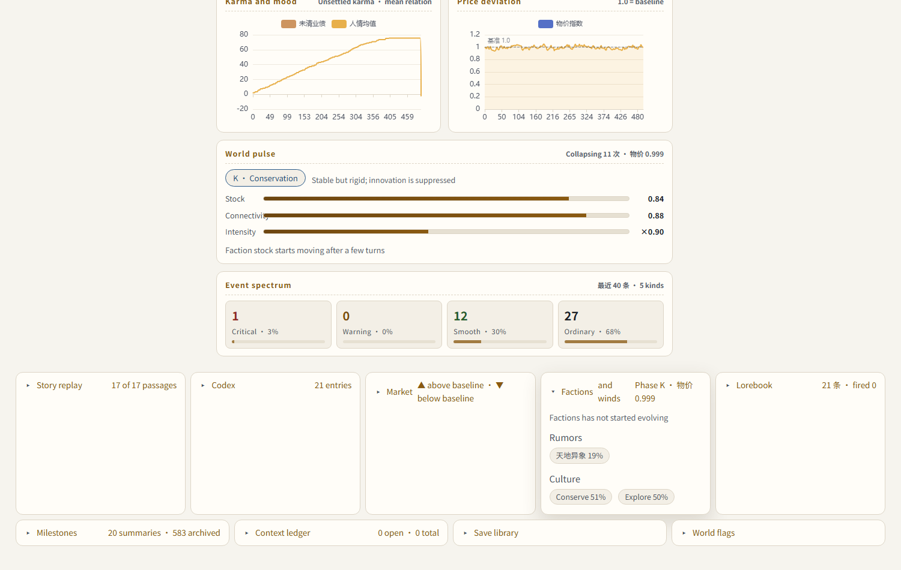
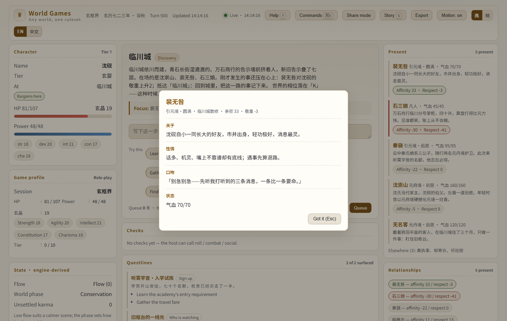
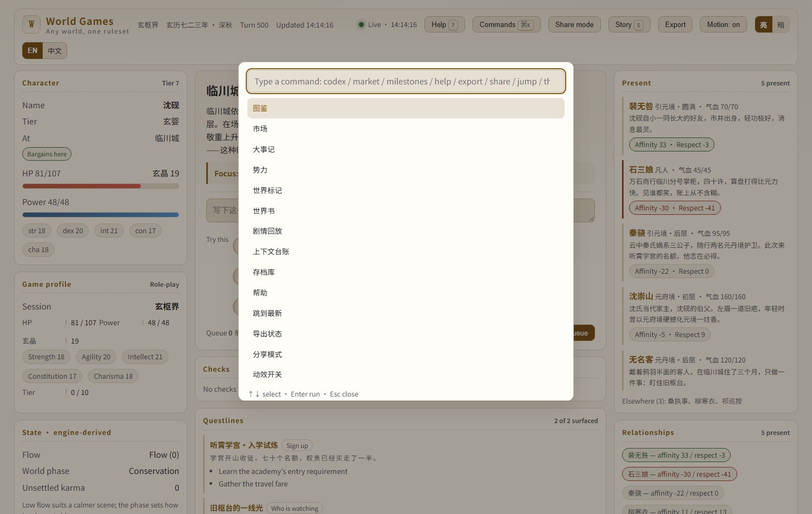
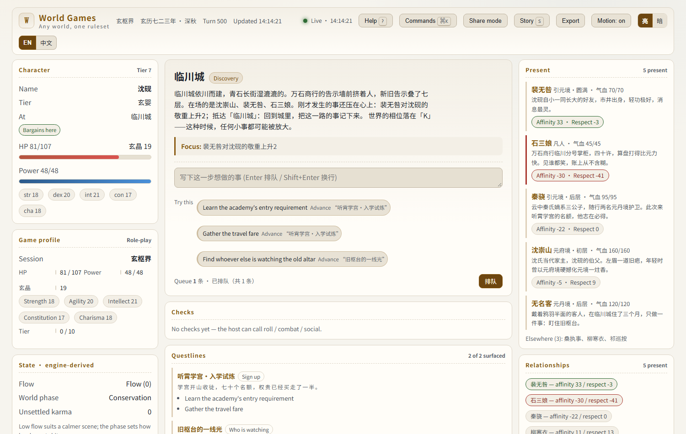
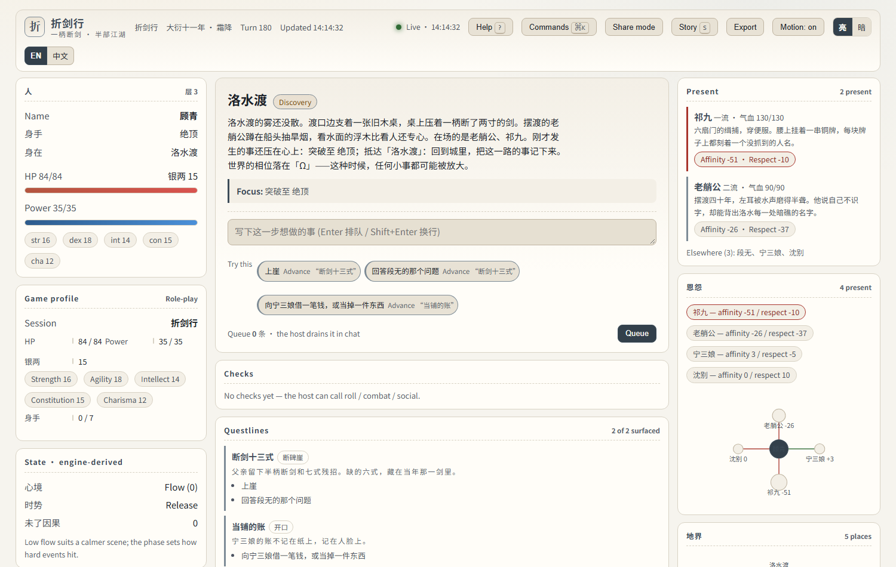
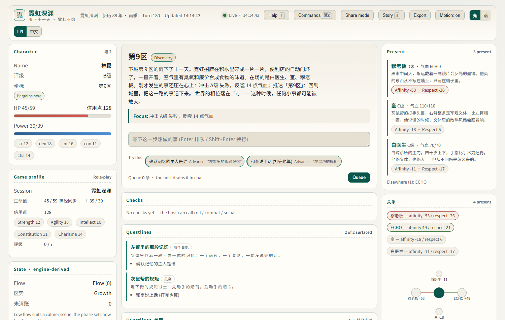
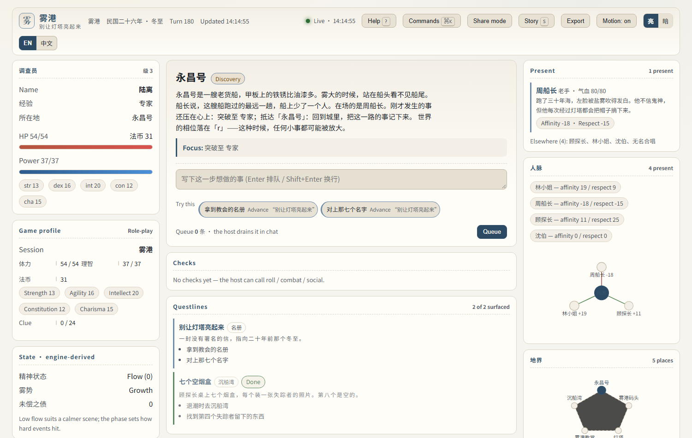

World Games · v1.5.0
The rules layer for AI-driven interactive games. Every hit, price, relationship and faction shift is resolved by a deterministic engine and persisted to one auditable state file. Same state, same seed, same actions — byte-identical replay. AI 互动游戏的规则层。每一次命中、价格、关系与势力变化都由确定性引擎结算， 写进同一份可审计的状态文件。相同状态、种子与行动序列，逐字节可复现。
Narrative, HUD, long-run charts, relationship graph, place map, world pulse, codex and market. The panel never writes game state; players queue actions to a sidecar file and the host drains them. 叙事、状态、曲线、关系网、地点图、世界脉搏、图鉴与市场。 面板不写游戏状态；玩家把行动排进侧写队列，由宿主取走结算。






Swap worlds without touching code. A bundle declares terms, tiers, currency, place descriptions, lorebook, brand and skin. The panel stops showing "realm / spirit stone" unless that world has them. 换世界不改代码。设定包里写清术语、等级阶梯、货币、地点描写、世界书、品牌与皮肤。 面板上不会再出现"境界 / 灵石 / 修行轨"——除非这个世界本就该有。



playbook configures the loop, progress axis, failure condition, beats and
context policy. Loops guide the host; the engine does not enforce them.
playbook 配置循环类型、进度轴、失败条件、节拍和上下文策略。
玩法循环是宿主叙事指引，不由引擎强制执行。
| Bundle设定包 | Loop玩法循环 | Progress进度轴 | Failure失败条件 | Beats节拍 |
|---|---|---|---|---|
| Xuanshu | freeform自由推进 freeform | tier 0–10修行阶 0–10 | hp重伤退场（hp） | daily · friction · mortal peril (every 6)日常修行 → 势力摩擦 → 生死一线（每 6 回合） |
| Zhejian | ttrpg声明→判定→后果 ttrpg | skill 0–7身手 0–7 | clock 12债主上门（clock 12） | job · recon · strike · cost (every 4)接活 → 踩点 → 动手 → 代价（每 4 回合） |
| Neon Abyss | mud地点与命令 mud | rating 0–7评级 0–7 | clock 10被盯上（clock 10） | errand · contact · intrusion · fallout (every 4)跑腿 → 接头 → 侵入 → 翻车（每 4 回合） |
| Fogport | choice选项推进 choice | clues 0–24线索 0–24 | sanity理智（sanity） | anomaly · clue · deeper doubt (every 5)异常 → 线索 → 更深的疑问（每 5 回合） |
Stage DAG plus world-state predicates. A quest declares objectives and pressure, never a process. Dormant quests stay hidden; a stage without exit_if never advances on its own.stage DAG + 世界状态谓词。任务只声明目标与压力，不声明过程；dormant 的线不显示，没 exit_if 的一幕永不自动推进。
Four-value selectiveLogic, probability, sticky/cooldown, group exclusivity, recursion switch — tavern semantics, but the clock is the tick and results reproduce.selectiveLogic 四值、概率、sticky/cooldown、同组互斥、递归开关——与酒馆语义对齐，但时间是 tick，可复现。
Failure is not only hit points. A creditor at the door, a tail, or a drained sanity meter are all configurable failure conditions advanced by failure_tick.不是"扣血才算失败"：债主上门、被盯上、理智耗尽都是可配置的失败条件，由 failure_tick 推进。
Every tick advances factions, rumors, culture, NPCs and the Panarchy cycle.
Do not call it and the world stands still — that is intentional.
宿主调用 tick 时推进世界演化，包括势力、谣言、风气、NPC 与 Panarchy 相位。
不调用时世界不会自行推进。
Each faction has a deterministic endowment cap: logistic growth, mild Lotka–Volterra pressure between the top two, challenger backflow. Stable hierarchy long-term, turnover short-term.每个势力有确定性禀赋上限，logistic 增长 + 头部两家 Lotka–Volterra 温和压制 + 挑战者回流。长期有格局，短期有换手。
One SIR step spreads rumors; Deffuant bounded confidence moves culture. New rumors seed only on high debt, price anomalies or violent phases.SIR 一步传播谣言，Deffuant 有界信任推动风气。业债高、物价异动、相位剧烈时才播种新传闻。
r growth → K conservation → Ω collapse → α reorganisation, driven by real stock rather than a lookup table. Ω sharply raises event probability and damage.r 增长 → K 守恒 → Ω 崩溃 → α 重组，由真实存量驱动，不是查表。Ω 期事件概率与伤害显著更高。
Phase modulates events and combat, flow modulates hit chance, six-axis morality modulates social outcomes, tiers add combat power and gate breakthroughs.相位调制事件与战斗，心流调制命中，六维道德调制社交，等级阶梯给战力加成并限制突破。
Structured entries: type, amount, creditor, turn, settled. Unsettled debt lowers breakthrough odds and raises tribulation severity.结构化账本：类型 / 金额 / 债主 / 回合 / 是否结清。未清债务压低突破成功率，并进入"天劫"强度。
Summaries, milestones and generational archive. Rolling back switches archive files; it never deletes history already written.摘要 + 大事记 + 世代归档。回退只切换归档文件，绝不删除已写下的历史。
In scope: rule resolution, setting bundles, saves, host narration guidance, SillyTavern character cards and world info. Out of scope by design: image generation, multiplayer, cloud accounts, plugin marketplace. 提供规则结算、设定包、存档和宿主叙事指引，并支持读取 SillyTavern 角色卡与世界书。 明确不做：图像生成、多人联机、云端账号体系、插件市场。
The stage is read for hours, so light is the default and dark is one click away. Every visible text run is measured against WCAG AA in both themes by a real browser — not eyeballed from a screenshot. 主舞台是要长时间读的，所以默认亮色，暗色一键可达。 两套主题下每个可见文本都由真实浏览器实测 WCAG AA 对比度——不靠肉眼看截图。
The theme is applied from a synchronous head script, before the body paints. No light-then-dark flicker in recordings. 主题由 <head> 里的同步脚本在首帧前应用，不会先 paint 亮色再跳暗色。
Text accent, decorative line and solid fill are separate tokens. One variable cannot satisfy both a 4.5:1 text rule and a button background. 文字强调、装饰描边、实心填充是三个 token。一个变量无法同时满足 4.5:1 的文字规则与按钮底色。
The first frame shows a layout-stable skeleton and a 2px progress bar; both clear on first data, and an 8-second failsafe covers script errors. 首帧是布局稳定的骨架屏 + 2px 进度条，数据到达即撤；脚本异常有 8 秒兜底。
No pytest suite, by design. Verification is executable self-checks, behavior regressions and mutation testing: an assertion must be killable, not merely covered. 没有 pytest 套件，这是设计选择。验证包括可执行自检、行为回归和变异测试： 断言必须能被"改坏代码"杀死，而不是只被覆盖率统计到。
Core needs only the Python standard library; MCP clients install the optional extra.
world-walker-mcp remains a compatibility alias.
核心仅需 Python 标准库；MCP 客户端需要安装可选依赖。旧命令 world-walker-mcp 保留为兼容别名。
pip install -e ".[mcp]"{
"mcpServers": {
"world-games": { "command": "world-games-mcp" }
}
}load_setting(path="settings/玄枢界.setting.json")trade(location="临川城", item="ningyuan_dan",
direction="buy", quantity=1)
social(actor="player", target="shi_sanniang",
event="cooperate")
narration_context(scene_text="万石商行")
publish_prose(text="……")
tick()Playwright drives a real Edge browser against the real panel and records it. Not a motion mock-up. Playwright 在真实 Edge 中操作真实面板并录制，不是动效演示稿。